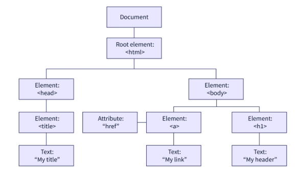

Summary Of DOM Manipulation
What is DOM Manipulation
DOM manipulation is the process of interacting with
the DOM API to change or modify an HTML document that will be displayed in a
web browser. This HTML document can be changed to add or remove elements, update
existing elements, rearrange existing elements, etc.
By manipulating the DOM, we can create web applications that update the data in
a web page without refreshing the page and can change its layout without doing a
refresh. Throughout the document, items can be deleted, moved, or rearranged.
Definition of the (DOM) and Basic concepts
The DOM in dom manipulation in javascript stands for Document Object Model.
The Document Object Model (DOM) is a tree-like structure illustrating the
hierarchical relationship between various HTML elements. It can be easily
explained as a tree of nodes generated by the browser. Each node has unique
properties and methods that can be changed using JavaScript.
By manipulating the DOM, we can create web applications that update the data in
a web page without refreshing the page and can change its layout without doing a
refresh. Throughout the document, items can be deleted, moved, or rearranged.
A visual Representation of the DOM tree is shown in the image below.

- Document is the core/foundation of the DOM.
- HTML root element is the child of the document object.
- Body and Head elements are the children of the
HTML element and siblings to each other.
- Title element is the parent to the text node: "my text”
and the child of the head element.
- a tag and h1 tag are the children of the body element
and siblings to each other.
- href attribute is the children of the a(anchor) tag.
How to Select Elements in the DOM
In order to change or modify an element in the DOM, you need to select
that specific element. Thus, JavaScript has six methods to select an element
from a document in dom manipulation in javascript.
- getElementById: returns an element whose id matches a passed string. Since the ids of elements are unique, this is the fastest way to select an element.
- getElementsByTagName: returns a collection of all the elements present in the document that have the specified tag name, in the order of their appearance in the document.
- getElementsByClassName: returns an HTMLCollection of elements that match the passed class name. Bypassing the class names separated by whitespace, we can search for multiple class names.
- getElementsByName: returns a NodeList Collection of the elements that match the value of the name attribute with the passed string.
- querySelector: returns the very first element within the document that matches the given selector. It only returns the element that matches with one of the specified CSS selectors, or a group of selectors.
- querySelectorAll: returns a static NodeList of elements that matches with one or a group of selectors. If no element matches, an empty NodeList is returned.